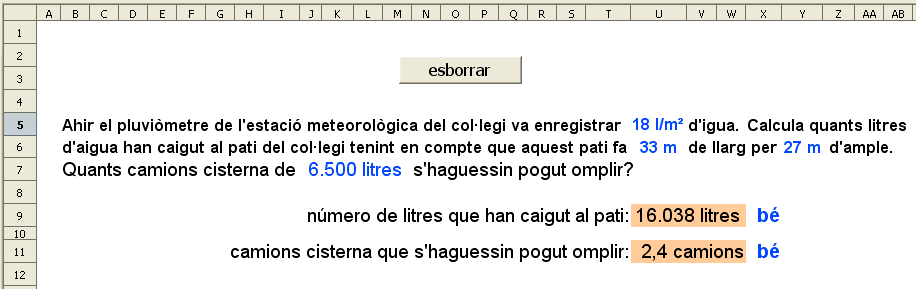

Problemes
Objectiu de l'activitat
Fer problemes amb autoavaluació i amb dades actualitzables mitjançant una macro
Problema 1
Presentació gràfica de l'activitat

Funcions que es fan servir en aquesta activitat
- Operadors de sumar, multiplicar i dividir.
Objectiu de l'activitat
Treballar els problemes.
Desenvolupament de l'activitat:
1. Obrir el el fitxer M6 i afegir un nou full amb el nom de M6P10 problemes i fer que el problema presente un aspecte semblant al de la presentació de l'activitat.
2. Escriure a la cel·la U5: =SI(A1=0;ALEATENTRE(1;60))
3. Fer que el codi de format de la cel·la U5 sigui: #" l/m²"
4. Escriure a la cel·la U6: =SI(A1=0;ALEATENTRE(20;40))
5. Fer que el codi de format de la cel·la U6 sigui: #" m"
6. Escriure a la cel·la Y6: =SI(A1=0;ALEATENTRE(15;30))
7. Fer que el codi de format de la cel·la Y6 sigui: #" m"
8. Fer que el codi de format de la cel·la J7 sigui: #.###" litres"
Per treure el valor de la cel·la J7, s'ha fet el següent:
- Escriure a la cel·la AF6: =SI(A1=0;ALEATENTRE(1;10))
- Escriure a la cel·la AF7: 1
- Extendre la cel·la AF7 fins la cel·la AF16
- Escriure a la cel·la AH7: 1000
- Escriure a la cel·la AH8: 2000
- Seleccionar les cel·les AH7 i AH8 i extendre-les fins la cel·la AH16
- Escriure a la cel·la AI7 el número 1 i extendre-la fins a la cel·la AI16
- Escriure el número 0 a les següents cel·les: AJ7, AJ9, AJ11, AJ13 i AJ15
- Escriure el número 500 a les següents cel·les: AJ8, AJ10, AJ12, AJ14 i AJ16
- Escriure a la cel·la AF17: =CONSULTA(AF6;AF7:AF16;AH7:AH16) que servirà de suport per saber de quants litre té de cabuda el camió cisterna.
- Escriure a la cel·la AH17: =CONSULTA(AF6;AI7:AI16;AJ7:AJ16) que servirà per sumar, si és el cas, 500 al primer suport.
- Escriure a la cel·la AJ17: =AF17+AH17 per sumar les dues quantitats i axió saber de quants litres d'aigua és el camió cisterna.
9. Escriure AF3:=U6*Y6
10. Escriure a la cel·la AF4: =AF3*U5 per saber els litres d'aigua caiguts al pati.
11.Escriure a la cel·la AH3: =AF4/J7 per saber el número de camions cisterna que calen.
12.Escriure a la cel·la AH4: =TRUNCA(AF4/AJ17;1) per retornar el número amb un decimal.
13.Escriure a la cel·la X9: =SI(U9="";"";SI(U9=AF4;"bé";"no"))
14.Escriure a la cel·la X11: =SI(U11="";"";SI(U11=AH4;"bé";"no"))
15.Protegir les cel·les que convingui.
16.Fer no visibles les cel·les que convingui.
17.Fer una macro amb les funcions que convingui.
18.Comprovar que funcioni l'activitat.
19.Desar el fitxer M6P10 problemes
Enunciat del problema 2
En una promoció de venda de cotxes es fa un descompte del 20% per la compra d'un cotxe. Calcula quan valdrà un cotxe que té un preu de 17000 €.
Observacions
Aquí les variables són el tant per cent i el preu del cotxe.
Desenvolupament de l'activitat
Enunciat del problema 3
En una guardiola hi ha 3 bitllets de 50€, 2 bitllets de 20€, 10 monedes de 2€ i 6 monedes de 50 cèntims. Calcula quants euros hi ha a la guardiola.
Observacions
Aquí les variables són el número i el valor dels bitllets i de les monedes.
Desenvolupament de l'activitat
Enunciat del problema 4
En un rellotge són les 8:40. Quantes hores i minuts manquen per arribar a les 11:30 ?.
Observacions
Aquí les variables són l'hora que indica el rellotge i l'hora sobre la qual es fa el càlcul.
Desenvolupament de l'activitat

|
|

|
|
|